將軍澳華人永遠墳場/西貢区
香港珍寺遊戯、お次は郊外へと向かう。
九龍半島の東側に位置する西貢区は香港の中でもとりわけ観光客に縁の無い土地といえよう。
なぜかといえば…まあ、要は何にも無いとことなんですね。
とはいえ地面あるところに高層住宅アリ、が香港の鉄の掟。
観光客など来なくとも高層住宅だけはびっしりと建っているのだ。
向かったのは將軍澳線の調景嶺駅。
駅前のわずかな商業施設以外はぜーんぶ高層住宅か建設中の高層住宅、あとは数年後に高層住宅になるであろう空き地。
それがこの街のほぼ全てである。
そんな激ニュータウンに鉄柵で覆われた通路がある。
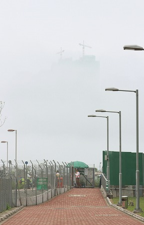
入り口には検問所のようなものがあり、やけに物々しい雰囲気。
そう、ここが香港最大の墓地である將軍澳華人永遠墳場の入り口なのだ。
この墓地の存在を知ったのはずいぶん前になる。
とある香港映画（多分かなり有名な映画）の凄く印象的なシーンがここでロケされており、その迫力に圧倒されいつか行こうと心に決めていたのだ。
肝心の映画のタイトルを忘れちゃったのでもう一度観ることすらままならないので、ご存知の香港映画マニアの方、ご一報いただけたら幸いです。
で、その墓地へは海沿いの、というか海に張り出した歩道を延々と歩くことになる。
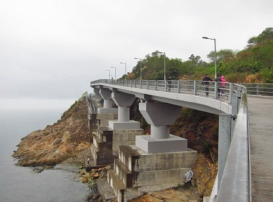
曇天中の曇天、おまけに物凄く濃い霧ゆえに対岸の高層ビルがまるで蜃気楼のようになっちゃってる。
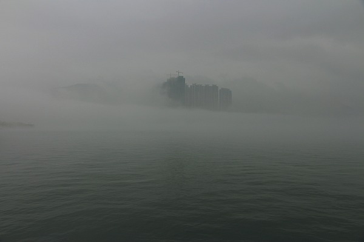
この世の風景とは思えなかった。
三途の川か！というくらい長い距離を延々と歩いていく。
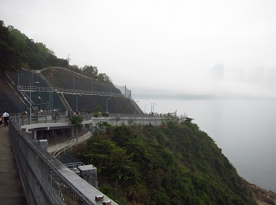
途中に休憩所も設けられている。
海沿いのぺディストリアンデッキといえば大抵は心ウキウキするはずなのに、何なのこのどよ〜んとした感じ。
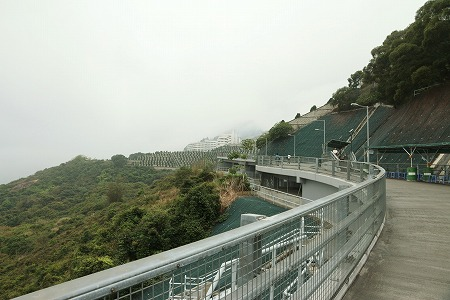
霧に煙る先にうっすらと「何か」が見えてきた。
それは山一個が丸々造成された霊園だった。
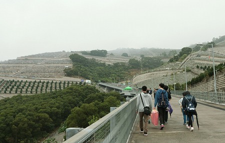
それにしてもこれだけ巨大な霊園が何でこんなにアプローチしにくいのだろう。
普通だったら駅からバスが出ておかしくないほどの規模だ。
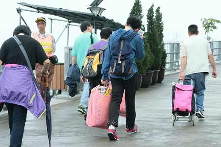
前を行く人たちも様々な参拝グッズを重そうに持って歩いている。
そもそも歩行者しか通れないペディストリアンデッキが唯一のアプローチって何かヘンじゃないすか？
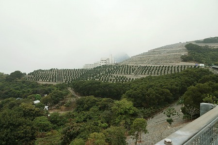
しかも遊歩道も最近出来たっぽいし。
一体どうなっているんだろう？
そんなこんなで墓地に到着。
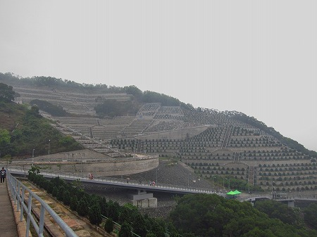
チョット尋常じゃないくらいの規模の霊園だ。
採石場か！と思えるようなガチムキの段々畑状態。
しかも墓が出来てない部分まで整地されており、そのようなところは墓の代わりに樹木が植えられている。
一見、緑の少ない香港だけに緑化してるのかー、と思えるが、墓として分譲が始まれば速攻でこれらの植木は引っこ抜かれる運命にあるのだ。
その辺香港らしい、といえばらしい。
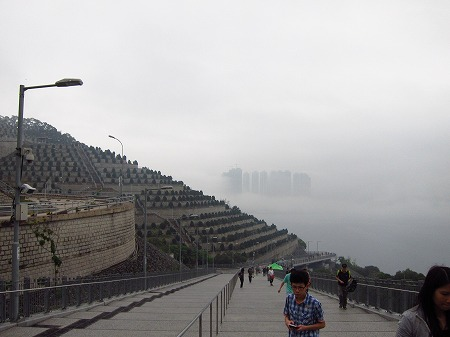
建物も建てられないような傾斜地でなおかつ海にせり出した歩行者道をわざわざ造らなければならないような利用価値が低い（つまり地価が安い）場所だからこそ霊園として使用することにしたのだろう。
猫の額にもビルが建つといわれる香港らしい立地条件といえよう。
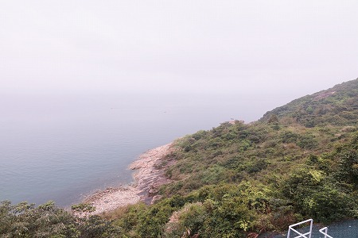
眼下は海。そんなに綺麗じゃない。そもそも霞んでてよく見えませんでした。
285,000㎡といわれる広大な霊園。実はその歴史は比較的浅く、1989年に出来たのだという。
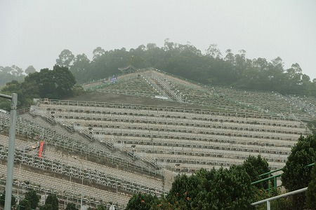
靄ってるだけに余計迫力があるぞ。
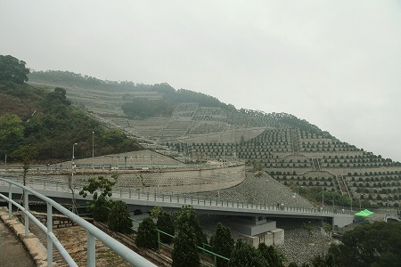
山ひとつが丸々広大な石積みで出来ている。
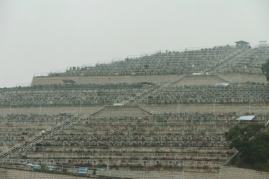
ある意味かなり特殊で大規模な土木事業だ。
木々をなぎ倒し、山を崩して石を積み、そこに木を植える。
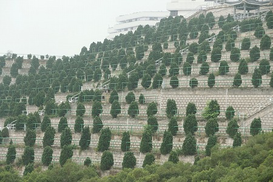
何だかやってることが矛盾してるなあ。
でもだからこそこの異様な光景が出現したわけだ。
ようやく霊園の中央部まで来た。
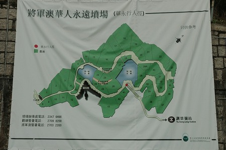
上図の右下に見える道を延々と歩いてきたわけだが、コレを見るといかに広大な霊園かが判る。
地図で確認したら駅からここまで1.6キロ歩きました。
迷子になったり遭難しそうになったらここに電話するそうな。
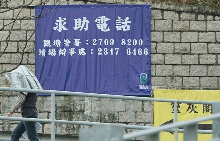
悪天候にもかかわらず墓参りに来る人は多かった。
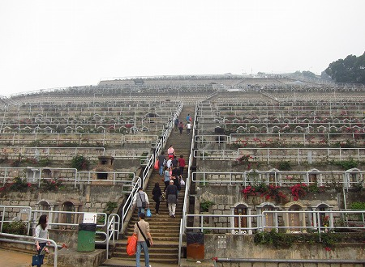
急斜面に立てられた墓だけにひな壇ごとに手すりがついている。それがまた一段とこの景観のキツいスパイスとなっている。
手すりに囲まれた升席のような墓。
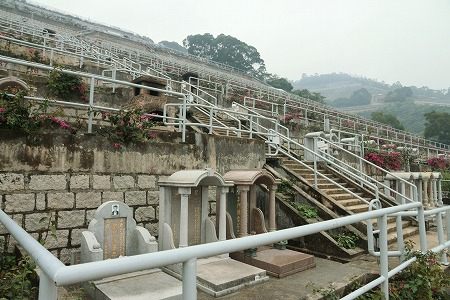
同じような形の墓が延々と続く。
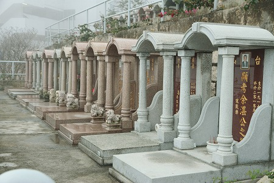
日本のような○○家之墓という家墓ではなく、全部個人の墓のようだ。
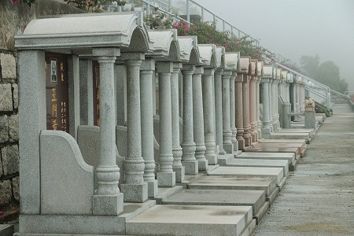
写真の両脇は出身地か。
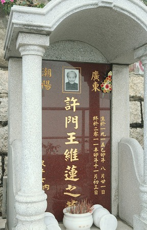
中国本土の出身者が多いようだ。
ずらりと並んだ墓の裏には小さな石碑が置かれている。
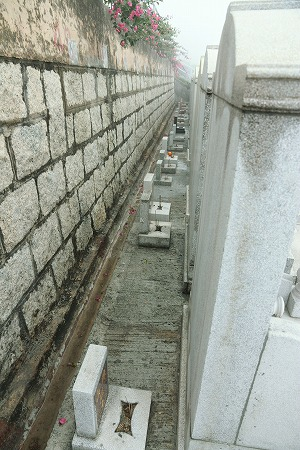
陳山后土とあり、こちらにも線香が手向けられている。
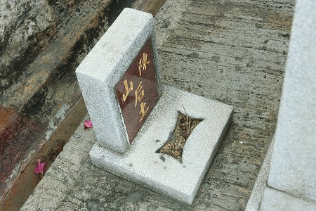
后土とは道教の神で、土地、特に墓の神様とされている。
華南では同様の神様を墓で見かけることがある。
ちなみに日本でも長崎市内の墓地では墓石の脇に土神という小さな石碑を建てることが多いが、それはこの后土のことだろう。
実は長崎の墓や供養習俗は華南の影響が多く見られて実に興味深いのだが、長くなっちゃうのでそれはまた別の機会に。
大きな荷物を持った人たちが奥へ奥へと歩いていく。
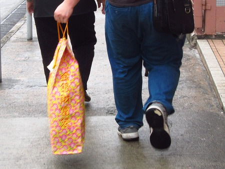
皆さんが向かう先は霊灰閣とな。いってみるか。
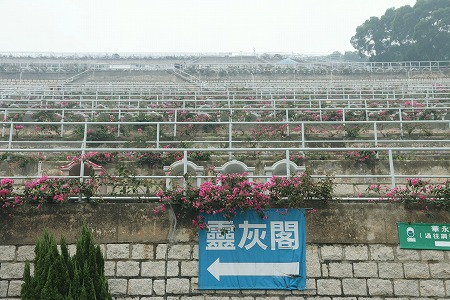
霊灰閣とはこんな近代的な建物。
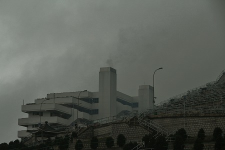
煙突からは薄い煙が上がっている。
ああ、コレは火葬場なのか、と思ったものの、折角だから見られるトコまで見てみようと中に入ってみた。
中に入ると馬券売り場のように殺伐とした雰囲気。
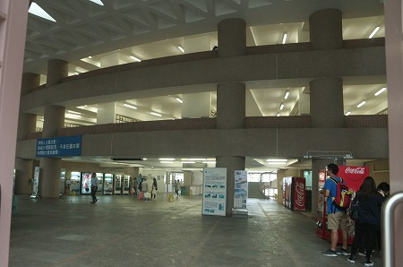
それにしても煙が凄い！
先ほどの霧も相当だったが、こちらはもっと視界が悪い。建物の反対側が見えないほど。
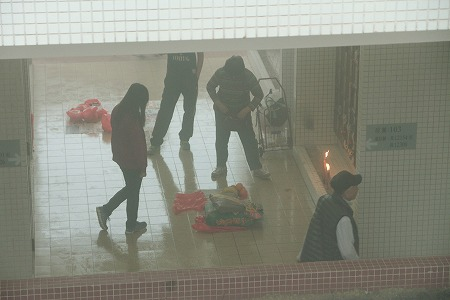
まさか人を焼いている煙が充満しているのか。凄過ぎるぞ、香港。
建物の中には延々とロッカー墓地が並んでいた。
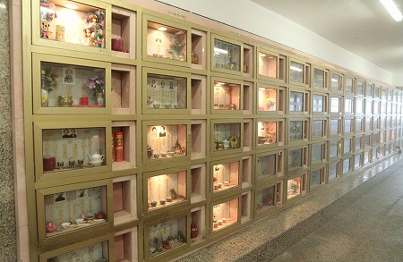
ここ霊灰閣の建物の大半はロッカー墓地だった。
霊灰閣とは火葬場ではなく、死者に奉納する冥銭（あの世で流通しているとされる紙幣）をバンバン焼いていたのだ。
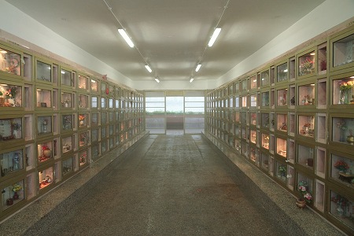
つまりこの建物内の隅から隅まで充満している煙は冥銭を焼いている煙なのだ。
そういえば来る人来る人、みんな大きい紙袋を持ち込んでるけど、アレ全部冥銭なんだろうなあ。
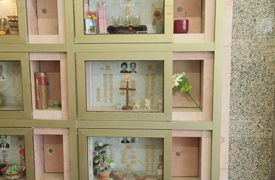
いくら亡くなった人のための供養とはいえもう少しなんとかならなかったのか？炉の設計。
気管支弱い人はとても中に入れないほど。軽いボヤ現場みたいだ。
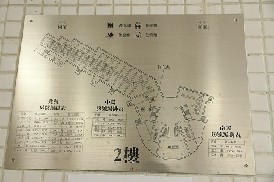
特に地下は煙が逃げずに盛大に煙ってました。燻製になりそう…
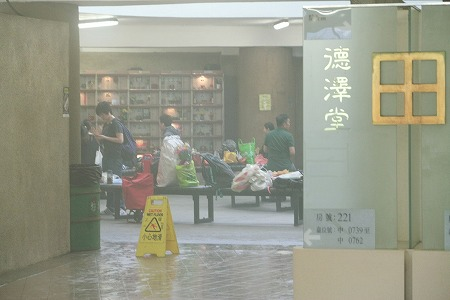
今にして思えば外は霧、中は煙。どこに行っても視界が悪く、現実感がまるでないところだったなあ。
ただその中で、究極的にな死生観を突きつけられたような気がした。
次はお寺だ！